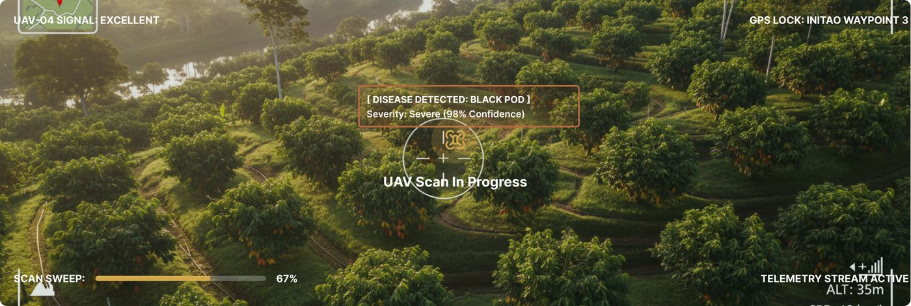

Monitoring
Live UAV feed & farm monitoring
UAV: Scanning (67%)
Active UAV Scan Sweep - Sector Alpha
Alt: 45m • Speed: 12km/h ● LIVE

Target Farm Overview
Cacao farm located in Initao, Misamis Oriental, Philippines
Initao Cacao Farm
Active TargetInitao, Misamis Oriental
Waypoint 3 monitoring • Initao, Misamis Oriental, Philippines
Acreage12.4 ha
Pathogen Load18%
- Owner
- Juan Dela Cruz
- Current Risk
- Low Risk
- Last UAV Scan
- Today, 10:14
- Waypoint
- Waypoint 3
Pathogen Load18%
Stable readings across the current monitoring sweep.
Scan Results - Initao Cacao Farm
Recent UAV diagnoses across farm waypoints
| Waypoint | Severity | Confidence |
|---|---|---|
Waypoint 1Today, 10:14 | Healthy | 98% |
Waypoint 2Today, 09:42 | Defective | 91% |
Waypoint 3Yesterday, 16:20 | Defective | 95% |
Waypoint 5Yesterday, 14:05 | Defective | 87% |
Block E - CentralOct 24, 11:15 | Healthy | 99% |
Farmer Feedback
Log ground truth validation reports